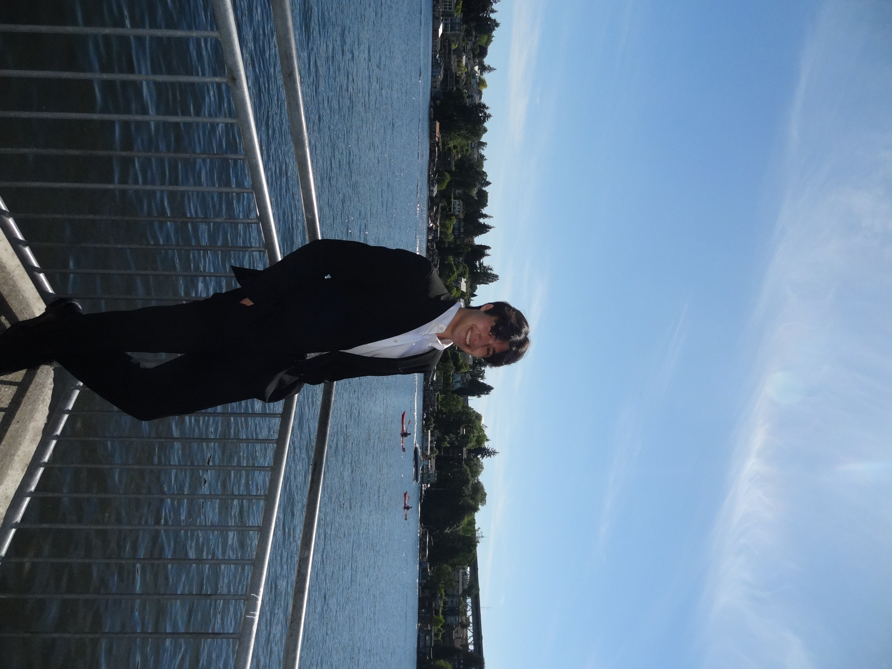

Background
My main background is in tech, with experience using Java, Python, R, and SQL. I also really enjoy design and product management! I'm very comfortable using Figma and have worked with Agile methodologies and Jira on several projects.

Hello! Nice to meet you! My name is Jackson and I am currently in my second year at the University of Washington studying informatics. What is informatics? It's essentially a combination of a little computer science, information science, and some human centered design. To put it short, I'm learning how technology is designed so that I can potentially make it better!
Outside of my academic life, I enjoy playing way too much tennis, uncordinated roadtrips, cooking good food, and eating it!

My main background is in tech, with experience using Java, Python, R, and SQL. I also really enjoy design and product management! I'm very comfortable using Figma and have worked with Agile methodologies and Jira on several projects.
I'm really interested in UX/UI design, programming fun projects, and building things that are useful to me and others. I love combining creativity and technology, whether that's designing intuitive user experiences, making things look aesthetic, or bringing an idea to life through code. I enjoy projects that let me be creative while also solving real problems!
Right now, most of my focus is on graduating and hopefully finding a job that I'm excited about! Along the way, I see myself taking on more projects, collaborating with new people, making mistakes, and learning as much as I can. I'm excited to keep growing, trying new things, and hopefully celebrate a few successes along the way!